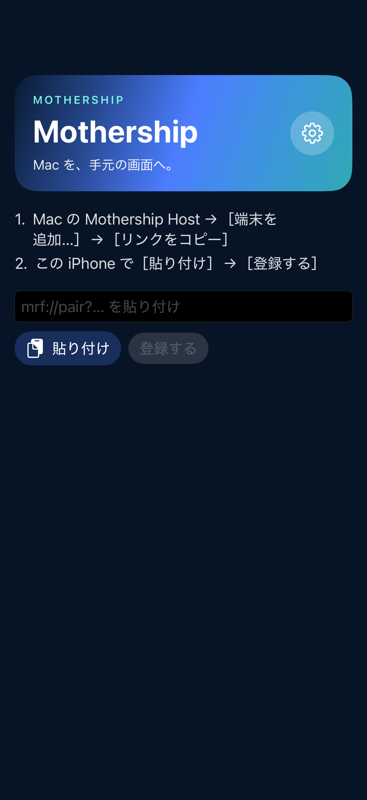
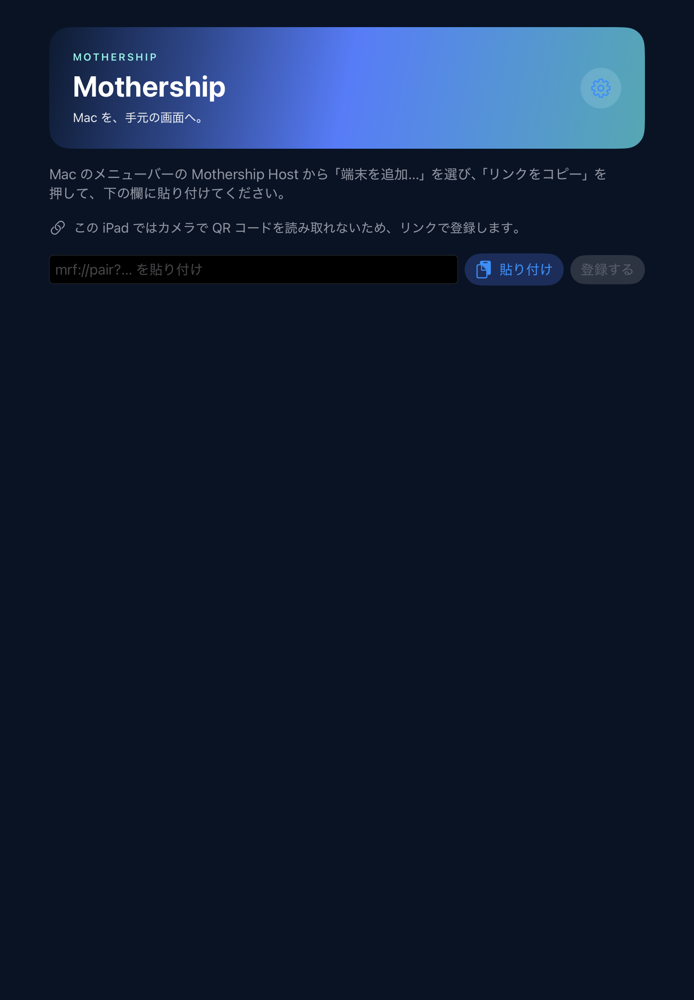

明るく、澄んだ青
地は明るく。夜の面は、ここぞという所（声で入力・ダウンロード）にだけ使います。
デザインシステム
LPで使っている色・文字・余白・部品を、1か所にまとめました。新しいページを作るときは、ここにある値と部品だけで組みます。
ページの <head> で、番号の順に読み込みます。そのページだけの組み方（並べ方・置き場所）は、いちばん最後のファイルに書きます。
<link rel="stylesheet" href="designSystem/tokens.css">
<link rel="stylesheet" href="designSystem/base.css">
<link rel="stylesheet" href="designSystem/components.css">
<link rel="stylesheet" href="styles.css"> <!-- そのページだけの組み方 -->../index.html）は、この 3 つと ../styles.css でできています。ここを直すと、LP も一緒に変わります。tokens.css と見本そのものから取り出して表示しています（書き写していません）。var(--名前) をコピーできます。部品の下の「HTML を見る」で、書き方を見られます。README.md にあります。迷ったときは、この 4 つに戻ります。
地は明るく。夜の面は、ここぞという所（声で入力・ダウンロード）にだけ使います。
見出しは太く、本文はゆったり。飾りよりも、読みやすさを優先します。
ボタンとラベルは丸く、カードは大きな角丸。影は薄く、遠くに落とします。
実物でない絵には「イメージです」と書きます。根拠のない「最速」「No.1」は書きません。
色は、役割で選びます。札を押すと var(--名前) をコピーします。
読みやすさの目安（WCAG）は、ふつうの文字で 4.5 : 1 以上、大きな文字（24px 以上、または太字で 19px 以上）で 3 : 1 以上です。比は、このページが tokens.css の値から計算しています。
| 見本 | 文字 | 面 | 比 | 使える範囲 | 使う場所 |
|---|---|---|---|---|---|
| あ Aa | --ink | --bg | 見出し、本文 | ||
| あ Aa | --ink-2 | --bg | リード | ||
| あ Aa | --ink-2 | --surface | カードの説明 | ||
| あ Aa | --ink-3 | --surface | 注記（白い面の上） | ||
| あ Aa | --ink-3 | --bg | 注記（地の上）。ぎりぎりなので、小さい文字は白い面の上に置く | ||
| あ Aa | --ink-3 | --wash-2 | 明るいグラデーションの上。小さい文字には --ink-2 を使う | ||
| あ Aa | --blue-deep | --surface | キッカー、ラベル | ||
| あ Aa | --blue-deep | --wash-2 | 明るいグラデーションの上のラベル | ||
| あ Aa | --blue | --surface | 番号、矢印 | ||
| あ Aa | --sky | --surface | （線と面だけに使う） | ||
| あ Aa | --on-dark | --ink | 濃いボタン | ||
| あ Aa | --on-dark | --blue-deep | ボタンにカーソルを合わせたとき、夜のパネルの明るい側 | ||
| あ Aa | --on-dark | --sky | （グラデーションの空色の側には、小さい文字を置かない） | ||
| あ Aa | --on-dark-2 | --navy-2 | 夜の面の本文 | ||
| あ Aa | --on-dark-3 | --navy-2 | 夜の面の補足 | ||
| あ Aa | --on-dark-3 | --blue-deep | 夜のパネルの明るい側の補足 | ||
| あ Aa | --on-dark-4 | --navy-2 | 夜の面の注記 | ||
| あ Aa | --cyan | --navy-2 | 夜の面のキッカー |
--ink → --ink-2 → --ink-3 の 3 段、暗い面では --on-dark から --on-dark-4 の 4 段だけ。--navy・--navy-2 で作る。まっ黒（#000）は使わない。rgba(var(--blue-rgb), .12) のように書く（-rgb の付く変数がある色だけ）。青から空色へ。向きは左上から右下、色の順番は「濃い青 → 青 → 空色」で固定です。
--grad-brand見出しの中の色の文字（.grad-text）。--grad-accentアイコンの台、ステップの番号。--grad-navy夜のパネル（ダウンロード、Mac のカード）。--grad-wash図の台。--grad-hero明るい背景。ページのいちばん上に 1 回だけ。--grad-night夜の背景。1 ページに 1 か所まで。書体は、その機器に入っているゴシック体を使います（読み込みを待たせない）。
見出しとリードは、画面の幅に合わせて大きさが変わります。青い数字は、いまの幅での実際の値です。
離れていても、Macはそばに。
映すだけじゃない。ちゃんと使える。
小さな画面でも、文字はくっきり。
日本語も、いつもどおりに打てる。
くっきり見える
スマホから、いつものMacへ。作業の続きに、どこからでも。
Mothershipは、離れた場所からMacを「見る」ためではなく、「使う」ために作りました。
アプリのダウンロードは無料です。はじめてMacにつないだ日から14日間、すべての機能を制限なしで使えます。
デバイスごとに、ぴったりの大きさの画面をMacに用意。小さな画面でも、文字がつぶれません。
操作できるのはMacだけです。WindowsやLinuxのパソコンは操作できません。
専用モニターは、接続を切ると自動で消えます。
イメージです（実際の画面とは異なります）
| 変数 | 値 | 見本 | 使う場所 |
|---|---|---|---|
--weight-heavy | Macはそばに。 | 見出し、キッカー、ピル | |
--weight-bold | Macはそばに。 | ボタン、質問、強調 | |
--weight-semibold | Macはそばに。 | ナビ | |
--weight-medium | Macはそばに。 | HERO のリード | |
| （指定なし） | 400 | Macはそばに。 | 本文 |
text-wrap: balance）。それでも変な所で折れるときは、言葉のまとまりを <span class="nb"> で囲みます。<br class="sp">。.grad-text）。マーカー（<mark>）は、1 画面に 1 か所。余白は 4px の倍数で取ります。--space-N は N × 4px です。
--space-1--space-2--space-3--space-4--space-5--space-6--space-8--space-10--space-12--space-16棒の長さは、値に比例して描いています（実際より長く見せています）。
| 変数 | 値 | 使う場所 |
|---|---|---|
--wrap | 本文の最大の幅。中身は .wrap に入れる | |
--gutter | 左右の余白（いまの画面の幅での値。860px より広いと 24px、それ以下は 20px） | |
--header-h | ヘッダーの高さ | |
--section-y | セクションの上下（.section） | |
--section-head-gap | セクションの見出しと中身の間（.section-head） |
| 画面の幅 | 書き方 | 変わること |
|---|---|---|
| 980px 以下 | @media (max-width: 980px) | 2 列の組みを 1 列に、4 列を 2 列に |
| 860px 以下 | @media (max-width: 860px) | スマホの組み方。メニューはボタンで開く。左右の余白は 20px |
| 480px 以下 | @media (max-width: 480px) | 小さいスマホ。ボタンは横いっぱい |
--space-5）が基本です。.section に任せます（ページごとに決めない）。@media の中では変数を使えないので、数字で書きます）。小さな部品ほど小さく、大きな面ほど大きく丸めます。
--radius-xsフォーカスの枠--radius-smキー、小さな部品--radius-mdアイコンの台、札--radius-lgカード--radius-xl大きいカード--radius-2xlいちばん大きいパネル--radius-pillボタン、ピル影は、ほんとうに浮いているものにだけ付けます。ふつうのカードは、影ではなく細い枠（--line）で区切ります。
--shadow-card浮かせるカード、札、開いたメニュー--shadow-button濃いボタン--shadow-brand青く目立たせるカード--shadow-brand-hoverそのカードにカーソルを合わせたとき--shadow-device端末の枠動かすのは 2 つだけ。触ったときの手ごたえと、場面の切り替えです。札にカーソルを合わせると、その速さで丸が動きます。
--dur-fast浮き上がり--dur-base色、背景、開閉--dur-slow場面の切り替え--ease-out（）。すっと動いて、ゆっくり止まります。base.css がまとめて止めます。くり返す動き（animation）は、作った側で止めます。どれも components.css にあります。見た目はクラスで決め、置き場所（外側の余白）は、ページ側のクラスで決めます。
いちばんしてほしいことに、濃いボタン（.btn-primary）を 1 つ。その次の選択肢に、枠だけのボタン（.btn-ghost）。高さは 54px、480px 以下の画面では横いっぱいになります。
aria-hidden="true" を付けます。.pill に、置く面に合わせた種類を 1 つ足します。
Macを、もっと自由に。
いちばんの違い
近日公開.pill-glass：明るいグラデーションの上。.pill-brand：いちばん目立たせたい 1 か所。.pill-soft：白い面の上。.pill-ghost：暗い面の上。セクションの最初は、キッカー（.kicker）→ 見出し（.section-title）→ リード（.section-lead）の順。まん中にそろえるときは .section-head.center で包みます。
特長
Mothershipは、離れた場所からMacを「見る」ためではなく、「使う」ために作りました。
話すだけで文字が入るから、キーボードいらず。
声で入力
.light を足します。リードの色は var(--on-dark-3) にします。できること・含まれるものを並べるときに。カードの中では .small、暗い面の上では .on-dark を足します。
白い面に細い枠。影は付けません。上にアイコンの台（.card-icon）を置けます。アイコンは線画（線の太さ 1.8）で、色は白です。
デバイスごとに、ぴったりの大きさの画面をMacに用意。小さな画面でも、文字がつぶれません。
通信は暗号化して、Macとデバイスの間で直接。自宅のMacの画面は、ワンタップで隠せます。
キーボードのキーは <kbd> で書きます。
本筋から少し外れる大事な話に。1 つのセクションに 1 つまで。
操作したいMacに入れると、メニューバーに小さなアイコンが出ます。
Macに表示したQRコードを読み取ります。アカウントの登録は要りません。
あとはタップするだけで、Macの画面が手元に。
<details> と <summary> で書きます（スクリプトは要りません）。
かかりません。14日間の試用のあとは、一度の購入でずっと使えます。
Mothershipには、アカウントの登録がありません。Macに表示したQRコードを読み取るだけで使いはじめられます。
アプリの画面（暗い配色）は、そのまま置かずに枠に入れます。.phone が iPhone の形、.tablet を足すと iPad の形。幅は、置く場所に合わせてページ側で決めます。実物でない画面には、下に「イメージです」と書きます。


暗号化して直接つなぐ
専用モニターは、接続を切ると自動で消えます。
操作できるのはMacだけです。WindowsやLinuxのパソコンは操作できません。
.fine：すぐ上の文への小さな注記。.note：セクションの終わりの補足。ヘッダーは上に張り付き、スクロールすると半透明の背景が付きます（.is-scrolled）。860px 以下では、メニューがボタンで開く形になります。開閉と .is-scrolled の切り替えにはスクリプトが要ります（LP の ../script.js のはじめの 2 つ）。
../favicon.svg と同じです。短い文で、やさしい言葉で。1 つの文に、1 つのこと。くわしい決まりは ../../contents/README.md の「表記のルール」にあります。
:focus-visible）を消しません。下のボタンに Tab キーで移ると見えます。aria-hidden="true"。意味のある絵には alt か aria-label で説明を付けます。aria-labelledby で見出しを結びます。.skip-link）を置きます。var(--…)）で書く。tokens.css へ足してから使う。components.css に、そのページだけの組み方はページの CSS に書く。--sky・--mint を文字に使わない。LP には、この決まりにまだ合っていない値が少し残っています（見た目を変えないことを優先して、そのままにしました）。一覧は README.md の「まだそろっていない値」にあります。